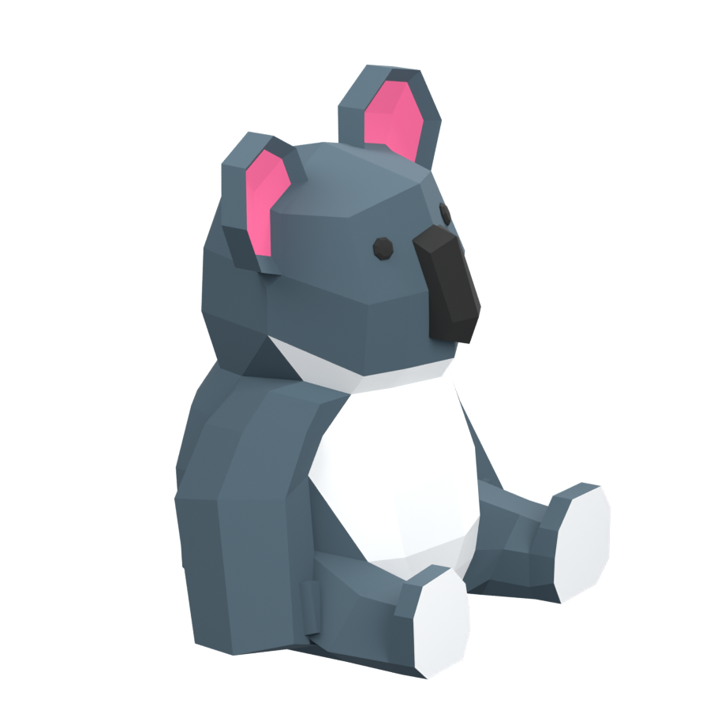

AUSTRALIA / MARSUPIALS
Meet the koala.
Phascolarctos cinereus
EXPLORE IN 3DStylized model

Loading your koala…
The 3D model could not load. You can still explore the facts.
AUSTRALIA / MARSUPIALS
Phascolarctos cinereus

The 3D model could not load. You can still explore the facts.